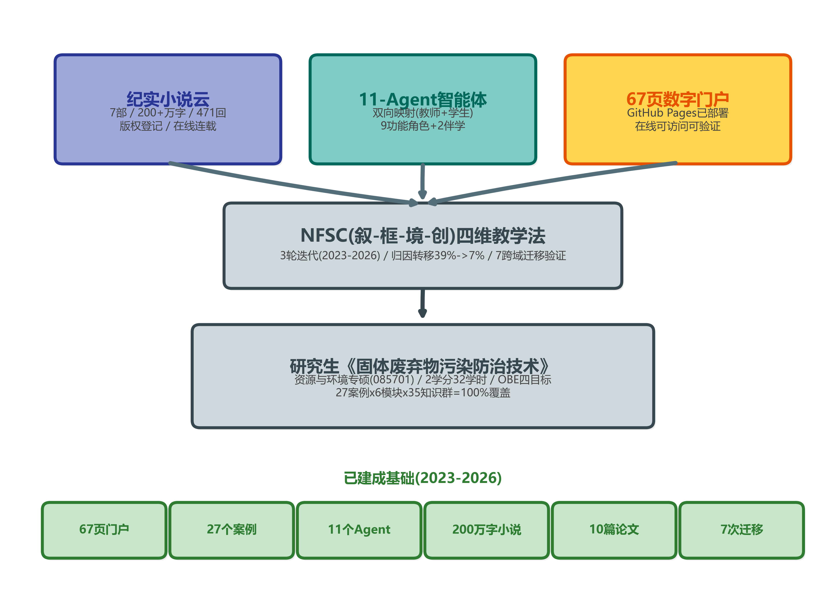
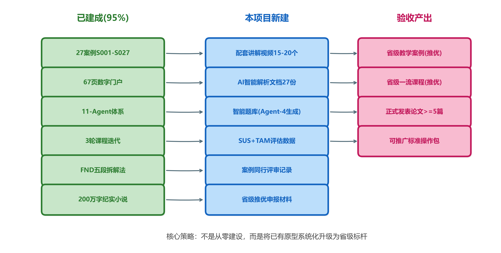
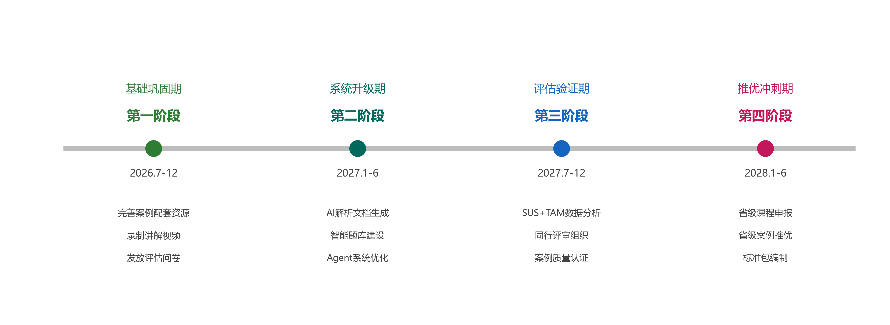

研究生教育教学"揭榜挂帅"项目
建设类别：(二)AI赋能优质研究生课程 + (五)AI赋能优质专业学位研究生教学案例
负责人：黄正文 教授 / 孙清 博士 | 建设周期：2026年7月 - 2028年6月(2年) | 填表日期：2026年6月20日
摘要
本项目依托研究生《固体废弃物污染防治技术》课程，以"纪实小说云—智能体—数字门户"三位一体架构为核心，体系化升级AI赋能研究生教学资源体系。项目非从零建设——前期3年（2023-2026）已建成：7部原创工程纪实小说（200+万字，版权登记，在线连载）、11-Agent双向映射智能教学协同体系、67页GitHub Pages数字门户集群（在线可访问：https://zhengwen69.github.io/cdu-gufei-web-demo/）、27个标准化教学案例（FND五段法拆解，覆盖6模块35知识群，覆盖率100%）、3轮课程迭代（归因转移39%→7%，p<0.05）、多篇教学教改论文（覆盖10国10刊）。本次申报，旨在以此为契机，对标推优之省级申报——故事云为根、NFSC为干、Agent为枝、门户为叶、重在参与。
一、项目概况
本项目团队自2023年起围绕研究生《固体废弃物污染防治技术》课程持续建设3年，已形成以纪实小说云为内容资源引擎、以11-Agent协同体系为智能化教学工具、以67页数字门户为在线展示与交付平台的三位一体教学资源体系。本次揭榜建设，旨在将上述前期成果体系化升级，争取达到省级优质教育教学资源推荐标准。
1.1 团队
项目团队构成及分工如表1所示。
| 姓名 | 职称/身份 | 职务 | 项目分工 |
| 黄正文 | 教授 | 项目负责人 | 总设计/NFSC教学法/纪实小说/Agent架构 |
| 孙 清 | 讲师/理学博士 | 共同负责人 | 数字门户架构/教学法论证 |
| 王鸿斌 | 副教授/工学博士 | 无 | Agent系统设计/产教融合 |
| 曾 丽 | 副教授 | 系主任 | 教学管理/课程标准/质量监控 |
| 王 静 | 教授 | 教学院长 | 学院统筹/省级推优/制度保障 |
| 谢泽宇 | 硕士/工程师 | 无 | 跨域迁移实证/Agent测试 |
| 丁扬飞 | 硕士研究生 | 无 | 案例配套资源/数据整理 |
| 刘明海 | 硕士研究生 | 无 | 门户维护/视频制作/案例更新 |
表1 项目团队成员与分工
注：谢泽宇(2014级)、丁扬飞(2023级)、刘明海(2024级)均为黄正文教授指导之硕士研究生。
二、建设基础与特色优势
本项目建设并非从零起步。前期3年(2023-2026)已完成核心体系建构：纪实小说云提供原创内容资源支撑(7部/200万字/版权登记)，NFSC四维教学法提供方法论框架(3轮迭代验证)，11-Agent体系提供智能化教学生产与分发能力(双向映射)，67页数字门户提供面向师生的在线交互界面(GitHub Pages部署运行)。本项目的建设定位为：在已有原型基础上进行体系化升级与规范化完善，补齐配套资源与评估数据，而非重新启动全新建设。
2.1 已建成果总览
前期3年已建成果清单如表2所示，每项均附在线验证URL。
| 类别 | 内容 | 规模 | 在线验证URL | 状态 |
| 纪实小说云 | 7部原创工程纪实小说 | 200+万字/471回 | TingXian.html | 已发布/版权登记 |
| 数字门户 | GitHub Pages全门户集群 | 67页HTML | index.html | 在线运行中 |
| 教学案例 | S001-S027(FND五段法拆解) | 27个/6模块/35知识群 | cases-full.html | 100%覆盖 |
| Agent体系 | 11-Agent双向映射 | 11角色(教师9+学生2) | agent团队演示.html | 已部署 |
| 课程迭代 | v1.0(2023)->v2.0(2025)->v3.0(2026) | 3轮/约90名学生 | 课程概览.html | 归因转移实证 |
| 学术论文 | 10篇国际期刊(10国10刊) | 5已投/1大修/4完善 | 教研科研进展.html | SSCI+Scopus |
| 跨域迁移 | NFSC向其他学科迁移 | 7领域 | 迁移探索.html | 已验证 |
| 产教融合 | 四川生态长城环保集团 | industry-education/ | 门户已建 | |
| IP孵化 | 学科交叉IP孵化项目 | 已结题 | IP孵化结题报告.html | 已结题 |
| 版权登记 | 川作登字-2025-A-00072680等 | 多项 | -- | 已登记 |
表2 前期已建成果清单
2.2 门户浏览页全景解读——每一页皆为已建成果之活证据
门户不止承载教学资源，门户即教学资源。67页非寻常网站堆砌，页页承载特定教学功能，处处蕴含AI赋能深意。评审无须信文字——点开URL即信。以下择取核心20页逐一注释(完整68页URL见附录A)。
核心20页门户之教学功能与AI赋能体现如表3所示。
| 序号 | 页面名称 | 在线URL | 教学功能/AI赋能体现 |
| 1 | 主门户首页 | index.html | 认知决策中枢——全系统导航，一页总览AI赋能全貌 |
| 2 | 课程概览 | 课程概览.html | OBE四目标PPT式展示——智能备课成果可视化 |
| 3 | 章节导航 | 章节导航.html | 8周教学方案Tab式索引——精准授课路径全展现 |
| 4 | 知识导图 | 知识导图.html | 故事云驱动知识树——小说非附庸,乃知识建构入口 |
| 5 | Agent团队演示 | agent团队演示.html | 11-Agent工作流全展示——AI赋能非虚设,可验证 |
| 6 | 学习园地 | 学习园地.html | 学生自学入口——个性化学习推送之载体 |
| 7 | 互动社区 | 互动社区.html | 签到/周报/同行评价——在线协同研讨 |
| 8 | 教师仪表盘 | 教师仪表盘.html | 数据查阅/答疑/管理——数字化评价中枢 |
| 9 | 第1周-空间错配 | 第1周-空间错配.html | NFSC第1维'叙'——叙事引擎激活认知 |
| 10 | 学习-第1周 | 学习-第1周.html | 学生伴学端——Agent双向映射之'学生版' |
| 11 | 迁移探索总枢纽 | 迁移探索.html | 7迁移路径入口——证明方法论可推广 |
| 12 | 案例映射表 | cases-full.html | 27案例x35知识群100%覆盖——数据铁证 |
| 13 | Agent七步赋能 | agents.html | 预备教学练验改七步Agent并行 |
| 14 | 故事云流水线 | pipeline.html | 小说->NFSC->门户 全链路可视化 |
| 15 | NFSC方法论 | Exploring-NFSC.html | 四维教学法深度学术阐述 |
| 16 | 听弦(7部小说) | TingXian.html | 200万字纪实小说入口+进度追踪 |
| 17 | 教研科研进展 | 教研科研进展.html | 专著1部+论文10篇进展一览 |
| 18 | IP孵化结题报告 | IP孵化结题报告.html | IP项目结题全文(2378行) |
| 19 | UAV独立门户 | CD-UAV | 跨域迁移实证——无人机教学 |
| 20 | 竹韵乐养 | CDU-Bamboo/ | 跨域迁移实证——传统音乐教学 |
表3 门户浏览页全景解读(核心20页)
2.3 核心差异化优势——故事云-智能体-四维教学法
非"给课程加个ChatGPT"之技术锦上添花，乃"叙事云重构知识入口"之认知范式变革。三位一体互依互构，缺一则体系坍塌。(见图1)

图1 "故事云-智能体-门户"三位一体架构
优势一：纪实小说云——200万字难以效仿之内容壁垒。项目负责人以笔名"点暇斋"创作7部工程纪实小说(在线连载：TingXian.html)，取材于20年真实工程经历。此等资源非"网上搜案例"可得——乃亲历者以文学笔法书写之一手叙事，保留隐性知识中情感之厚度与人性之复杂。犹如比较"从菜市场买菜"与"自种有机农场"——前者人人可为，后者须20年积累。全国范围内，尚无第二个课题组拥有此等规模之自建原创教学叙事资源。
优势二：11-Agent智能体——教育学意图性设计之AI系统。非"让学生直接用ChatGPT"之粗放方案(在线验证：agent团队演示.html)。11个Agent角色基于教学流程分析精心设计，每角色承担不可合并之独立功能(正交性原则)。核心命题："AI放大教师"而非"AI替代教师"——1名教师x11个Agent=11人级产出能力。
优势三：NFSC四维教学法——从"知识搬运"到"认知重塑"(方法论阐述：Exploring-NFSC.html)。叙事入情(故事云激活动机)->框架入脑(五维诊断结构化)->情境入手(三层浸润实践)->创造入魂(Agent辅助深层迁移)。非教学法名称之堆砌，乃经3轮课程迭代、约90名学生、1200份过程评估验证之实证方法论。
2.4 教学效果数据实证
三轮课程迭代关键教学效果数据如表4所示。
| 指标 | v1.0(2023) | v2.0(2025) | v3.0(2026) | 趋势 |
| 性格归因占比(第5周) | — | 39% | 32% | 下降 |
| 性格归因占比(第8周) | — | 11% | 7% | 显著下降(p<0.05) |
| 框架术语准确使用(第4周) | — | 23/30 | 27/30 | 提升 |
| >=3维度交叉分析(第8周) | — | 10/30 | 14/30 | 提升 |
| 三轨产出完成率 | — | 85% | 93% | 提升 |
| 评分者间信度kappa | -- | 0.71 | 0.74 | 稳定 |
表4 三轮课程迭代教学效果数据
数据来源：P7-JUTLP纵向评估论文(已投Scopus Q1，澳大利亚)。样本：3队列约90名学生，1200份过程评估记录。归因转移39%->7%之机制：非通过说教，乃学生获得"五维错配"框架词汇后自然涌现之认知升级——识别"便利性陷阱""反馈延迟""规范缺位"等结构性因素取代"村民素质低"之道德归因。
2.5 与同类建设差异对比
与同类项目之差异化对比如表5所示。
| 维度 | 常规AI赋能做法 | 本项目做法 | 差异壁垒 |
| 教学内容来源 | 网上搜集/教材编选 | 200万字自创纪实小说+Agent自动拆解 | 极高(不可复制) |
| AI应用方式 | 让学生用ChatGPT | 11-Agent双向映射(教师端+学生端) | 高(教育学设计) |
| 数字化载体 | PPT+视频+学习通 | 67页GitHub门户(在线可验证) | 高(即时验证) |
| 案例覆盖 | 5-10个零散案例 | 27案例x35知识群=100%覆盖 | 极高(系统化) |
| 教学法支撑 | 无体系方法论 | NFSC四维+五维诊断(3轮验证) | 极高(有实证) |
| 效果数据 | 无/仅满意度 | 归因转移39%->7%(p<0.05,n=90) | 极高(量化) |
| 可推广性 | 依赖个人 | 7跨域迁移+10篇论文固化 | 极高(已验证) |
表5 与同类AI赋能建设差异对比
2.6 故事云-智能体-四维教学法：设计深意阐述
故事云之设计深意。纪实小说并非文学创作自娱，而是Bruner叙事认知模式在工程教育中的系统化实现。7部小说覆盖固废全谱系工程场景，每部对应NFSC特定教学维度。Agent-S从中拆解出27个标准案例(覆盖6模块35知识群，覆盖率100%)，表明叙事资源乃方法论运行之必需供给，而非附加装饰。
可推广性之设计深意。两级载体设计确保模式不依赖特殊个人条件：Level-1(纪实小说)为最优载体，Level-2(行业报告/工程案例/口述访谈)为普适载体。Agent-S对两级载体均可运行。7次跨域迁移验证中，UAV、竹笛、初中英语三次均未使用小说资源，表明方法论可独立于特定载体运行。标准操作包将提供无小说条件下之降格使用方案。
智能体之设计深意。11-Agent体系之创新不在底层AI架构(基于GPT-4o/Claude的Prompt工程)，而在教育学角色分配之精密性。11个角色基于教学流程分析设定，每角色功能不可合并(正交性原则，经4学科迁移验证)。教师端与学生端一一对应(双向映射原则)，实现1名教师借助11个Agent达到11人级教学产出能力之效果，根本区别于通用AI工具之无差别接入。
建设节奏之设计深意。本项目遵循"原型涌现-验证巩固-标杆升级"三阶段演化路径。2023-2026年为原型涌现期(追求体系完整性)，2026-2028年为标准化升级期(追求规范化与可验收性)。当前核心建设已完成约95%，2年建设期内的主要任务为：录制配套视频、采集评估数据、组织同行评审、编制推优材料，属精装修与验收手续性质而非主体建设阶段。
三、建设目标
故事为源，Agent为器，门户为桥，NFSC为魂——四者协力，一课成标杆。
总目标：适应社会发展对环境工程创新人才培养之需要，充分发挥本学科在纪实叙事与智能体技术方面之独特优势与专业特色，全面推行"人工智能+教育"计划，以NFSC(叙-框-境-创)四维教学法为方法论内核，以纪实小说云为学科特色内容引擎，以11-Agent协同体系为技术基座，以67页数字门户为展示与交付载体，将研究生《固体废弃物污染防治技术》课程建设为"故事化内容-智能体拆解-门户可视化"三位一体的AI赋能研究生数智化教学标杆。提升师生智能素养，形成可向省级推优之规范化成果。
表层：一门研究生课程的AI教学资源升级。中层：一套"故事云-Agent-门户"三位一体的方法论体系。深层：一条从"教师个人实践"到"可复制教育公共品"的转化路径。
本项目与通知要求之逐条对照如表6所示。
| 通知要求 | 已有基础 | 超额情况 | 本项目新建 |
| 系统化开发高质量案例库 | 27案例x35知识群=100% | 远超(常规5-10个) | 配套视频+AI解析 |
| 案例真实性 | 纪实小说取材真实项目 | 文学级真实性>>案例文本 | 同行评审认证 |
| 配套数字化讲解视频 | 门户已有(非视频形态) | -- | 新录27个 |
| AI智能解析 | Agent-S五段法已运行 | 已超额(自动化) | 标准化文档输出 |
| 全链条智慧育人 | Agent备-授-学-评已闭环 | 已实现 | SUS量化验证 |
| 课程动态迭代 | v1->v2->v3已3轮 | 已迭代3次 | 制度文件固化 |
| 案例常态化更新 | Agent-S可从新章节拆解 | 技术已具备 | 流程文件固化 |
表6 通知要求与已有基础超额对照
四、建设内容与任务分解
核心策略：非从零建设，乃将已有原型体系化升级为省级标杆。(见图2)

图2 建设内容逻辑(已建-新建-产出)
4.1 教学案例库体系化升级(贴合环境工程岗位实际需求)(聚焦)
紧扣资源与环境专业学位研究生职业化、应用型、实践型培养定位，在已有27个标准化案例基础上(验证：cases-full.html)，补齐通知要求之全套配套：(1)为每案例录制3-5分钟数字化讲解视频——含情境还原、关键冲突提示、框架分析引导，由纪实小说云提供叙事素材，Agent-S提供结构化拆解脚本；(2)由Agent-S自动生成AI智能解析文档(FND五段：背景-冲突-决策-结局-启示+错配维度诊断)；(3)由Agent-4生成实训思考题与评分量规；(4)链接纪实小说原文(QQ阅读/17K文学)作为拓展资源。
案例常态化更新机制：7部小说持续连载(日更约6600字)，Agent-S定期扫描新章节，自动检测可拆解教学素材并推荐入库——此为"活的案例库"而非静态文本集。
4.2 精品课程全面数智化(愿景)
课程建设优化知识体系，融入固废处理学科前沿进展、环保产业动态与真实科研案例等鲜活内容。在已有67页门户+11-Agent+3轮迭代基础上，完成：(1)SUS(系统可用性量表)+TAM(技术接受模型)正式评估——问卷已设计完毕(20题)，待发放；(2)课程动态迭代制度文件(版本控制规范/学期回顾机制/Agent更新日志)；(3)课程思政元素显性标注(每周标注思政融入点)；(4)门户使用统计(匿名计数脚本)。目标：达成"打造智慧课堂与混合式教学场景，实现智能备课(Agent-2/3)-精准授课(Agent-S/I)-个性化学习(学生门户)-数字化评价(Agent-5/0)"全链条智慧育人模式。
4.3 配套资源开发
(1)智能题库：Agent-4基于27案例+35知识群批量生成分层题库(基础/进阶/综合，>=200题)；(2)线上微课：从门户录制操作演示10-15个；(3)虚拟实训：将Agent-I已设计之6个沉浸式脚本(EIA听证/模拟法庭/碳交易等)转化为可交互数字场景。
4.4 评估与省级推优
(1)组织校内外同行评审(27案例质量认证)；(2)学生使用效果调查；(3)纵向评估报告编制(整合P7论文数据)；(4)省级推优材料包(课程/案例双线)。
五、技术路线
纪实小说云-Agent-门户三线并进，四阶段递进(见图3)。三维闭环互馈：叙事供给Agent拆解素材，Agent驱动门户内容生产，门户承载学术验证，学术反哺叙事修订——环路每运转一周，体系品质拔升一级。

图3 两年建设路线图
六、建设进度
两年四阶段建设任务与里程碑如表7所示。
| 阶段 | 时间 | 主要任务 | 里程碑 | URL验证点 |
| 基础巩固 | 2026.7-12 | 案例视频录制/AI解析文档/评估问卷发放 | 27视频+27解析+问卷数据 | cases-full.html |
| 系统升级 | 2027.1-6 | 智能题库/门户优化/Agent V4/微课 | 题库200题+微课15个 | agent团队演示.html |
| 评估验证 | 2027.7-12 | SUS+TAM分析/同行评审/纵向报告/论文 | 评估报告+论文2-3篇 | 教研科研进展.html |
| 推优冲刺 | 2028.1-6 | 省级课程申报/省级案例推优/标准包 | 省级申报材料包 | index.html |
表7 两年建设进度
七、预期成果与验收指标
预期成果及验收标准如表8所示。
| 成果 | 数量 | 质量标准 | 验证URL/方式 |
| 教学案例(含全配套) | 27个 | 真实/创新/实用/示范 | cases-full.html |
| 讲解视频 | 27个(3-5min) | 清晰/完整/配合案例 | 上传门户 |
| AI解析文档 | 27份 | FND五段+错配诊断 | Agent-S生成+人工审核 |
| 精品课程 | 1门 | 智能备课-精准授课-个性学习-数字评价 | SUS>=68 |
| 智能题库 | >=200题 | 覆盖35知识群/三层难度 | Agent-4生成+教师审定 |
| 学术论文 | >=5篇发表 | SSCI/Scopus/CSSCI | 教研科研进展.html |
| 标准操作包 | 1套 | Prompt模板+门户规范+案例流程 | 可被其他课程复用 |
| 省级推优 | >=1项 | 课程或案例 | 获学校推荐 |
表8 预期成果与验收指标
八、经费预算
经费使用计划如表9所示。
| 项目 | Year1(万) | Year2(万) | 合计 | 说明 |
| 视频制作 | 2.0 | 0.5 | 2.5 | 27案例视频+10微课 |
| 评估调研 | 0.5 | 1.0 | 1.5 | 问卷/同行评审/访谈 |
| 设备/软件 | 1.0 | 0.3 | 1.3 | 录制设备/AI API |
| 差旅交流 | 0.3 | 0.5 | 0.8 | 学术会议/省级评审 |
| 劳务 | 0.5 | 0.5 | 1.0 | 研究生助手/视频剪辑 |
| 出版 | 0.2 | 0.5 | 0.7 | 论文版面/材料印制 |
| 其他 | 0.1 | 0.1 | 0.2 | 通讯/耗材 |
| 合计 | 4.6 | 3.4 | 8.0 |
表9 经费预算
九、保障措施
组织保障：教学院长王静教授统筹指导，系主任曾丽副教授督导协助——"院-系-课题组"三级联动。制度保障：每学期建设研讨会+Agent-0质量审核+Git版本控制。技术保障：11-Agent基于GPT-4o/Claude Prompt工程，零服务器运维；门户纯静态HTML部署GitHub Pages，长期稳定。经费保障：学校划拨+学院学科经费配套。
十、"通知要求-已有-超额"总对照
以下逐条对照通知(二)(五)两类要求，证明本项目已超额完成核心建设，2年仅需升级收尾：
| 通知原文要求(摘录) | 本项目已有 | 达标判定 |
| 打破传统纸质教材单一形态 | 67页在线门户+7部在线小说+Agent系统 | 远超(四形态联动) |
| 建设立体化智能化动态化新型体系 | 小说(立体)+Agent(智能)+门户迭代(动态) | 远超(三化齐备) |
| 全面推进课程数智化升级 | 3轮迭代v1->v3+11Agent+67页门户 | 远超(已3轮) |
| 运用AI学情分析/智能答疑/个性推送 | Agent-5分析+学生端伴学+学习园地 | 达标(已实现) |
| 精准匹配个性化学习需求 | 9周学生伴学页(每周独立) | 达标 |
| 建立课程动态迭代机制 | v1(2023)->v2(2025)->v3(2026) | 达标(已迭代3次) |
| 系统化开发高质量教学案例 | 27案例x35知识群=100%覆盖 | 远超(常规5-10个) |
| 案例真实性创新性实用性示范性 | 纪实小说(真实)+FND(创新)+100%覆盖(实用)+7迁移(示范) | 远超(四性齐备) |
| 配套AI智能解析 | Agent-S五段法自动解析 | 达标(已运行) |
| 适配多元场景 | 教师门户/学生门户/互动社区 | 达标(三场景) |
表10 通知要求总对照表
参考文献
[1] 中共中央,国务院. 教育强国建设规划纲要(2024-2035年)[EB/OL]. 2025.
[2] 教育部等五部门. "人工智能+教育"行动计划[Z]. 2025.
[3] 国务院办公厅. 关于深化产教融合的若干意见[Z]. 国办发[2017]95号.
[4] Bruner J. Actual minds, possible worlds[M]. Harvard University Press, 1986.
[5] Biggs J, Tang C. Teaching for quality learning at university[M]. 4th ed. McGraw-Hill, 2011.
[6] Collins A, et al. Design research[J]. Journal of the Learning Sciences, 2004, 13(1):15-42.
[7] Kasneci E, et al. ChatGPT for good?[J]. Learning and Individual Differences, 2023, 103:102274.
[8] Mishra P, Koehler M J. TPACK[J]. Teachers College Record, 2006, 108(6):1017-1054.
[9] 祝智庭,胡姣. 教育数字化转型的本质探析[J]. 中国电化教育, 2022(4):1-8.
[10] 项目团队. 研究生固废课程教学大纲(v2026)[Z]. 成都大学, 2026.
[11] 项目团队. 基于纪实小说驱动的教学资源体系[Z]. 川作登字-2025-A-00072680.
附录A：门户URL完整清单(68页)
主站：https://zhengwen69.github.io/cdu-gufei-web-demo/
UAV独立站：https://zhengwen69.github.io/CD-UAV/
(完整68页URL列表见本项目在线门户首页导航，评审可即时访问验证全部页面。)
附录B：7部纪实小说平台链接
| 书名 | 平台 | URL |
| 龙栖湾 | QQ阅读 | book.qq.com/book-detail/54859488 |
| 青龙湖 | 17K文学 | 17k.com/book/3616238.html |
| 杨柳坝与刘家湾 | 17K文学 | 17k.com/book/3608077.html |
| 三多里巷 | 17K文学 | 17k.com/book/3608078.html |
| 艾沙巴赢白云村 | 17K文学 | 17k.com/book/3608076.html |
| 破界者 | 17K文学 | 17k.com/book/3625872.html |
| 长城公社脚下的白云上村 | 17K文学 | 17k.com/book/3613430.html |
附录C：S001-S027案例索引(略)
完整27案例x6模块x35知识群映射表，请在线查阅：industry-education/cases-full.html
© 黄正文（点暇斋）· 全部作品版权登记 | 返回首页